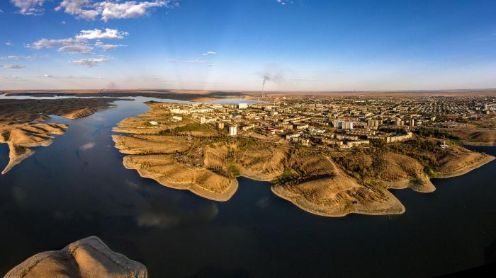

city, central Kazakhstan. It is located on a reservoir of the Kenggir (Kara-Kengir) River.
The city was created in 1938 in connection with exploitation of the rich local copper deposits.
In 1973 a large mining and metallurgical complex was constructed to the southeast to smelt the copper that until then had been sent elsewhere for processing.
The city has a rail link with Qaraghandy to the northeast.
